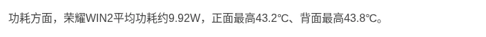
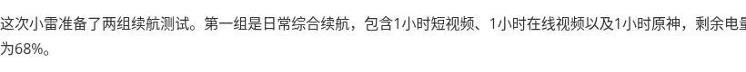
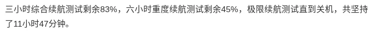
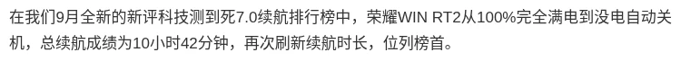
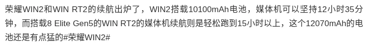
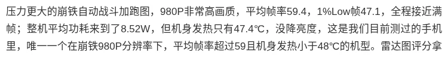
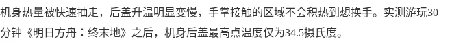

تقنية7 دقائق
هونر WIN Turbo 2 وWIN RT 2 وWIN 2: ثلاثة هواتف ألعاب بشاشة 185Hz وبطاريات حتى 12,070mAh
أعلنت HONOR اليوم 21 أكتوبر 2026 في الصين عن ثلاثة هواتف جديدة ضمن سلسلة WIN الموجهة للألعاب: WIN Turbo 2 وWIN RT 2 وWIN 2. الأجهزة الثلاثة تتشارك شاشة مسطحة بحجم 6.89 بوصة بدقة 2K وتردد 185Hz، وتختلف في المعالج والتبريد والكاميرا والبطارية والسعر.
هذه المقالة تجمع المواصفات الرسمية المعلنة فقط. الهواتف أُعلنت اليوم ولم تصل إلى أيدي المستخدمين بعد، لذلك لا توجد حتى الآن تجارب ملاك أو اختبارات للبطارية والحرارة والكاميرا. سنضيف الانطباعات والاختبارات الحقيقية في مقالات لاحقة عندما تتوفر.
HONOR WIN Turbo 2: أكبر بطارية بأقل سعر

يأتي WIN Turbo 2 بمعالج Snapdragon 8s Gen 4 وبطارية 12,070mAh، وهي نفس سعة بطارية RT 2، مع شحن سلكي 90W وعكسي سلكي 27W، ومن دون مروحة تبريد. الشاشة OLED من Visionox بسطوع يصل إلى 10,000 nits وتعتيم PWM بتردد 5920Hz وحواف بسماكة 0.93mm. الذاكرة LPDDR5X والتخزين UFS 4.1.
الكاميرا الرئيسية 50MP بمستشعر 1/2 بوصة وفتحة f/1.9 مع OIS، ومعها كاميرا واسعة 12MP بفتحة f/2.2، والأمامية 50MP بفتحة f/2.0. الحماية IP68 وIP69 وIP69K، مع بصمة فوق صوتية وسماعات ستيريو ومنفذ أشعة تحت الحمراء ومنفذ USB 2.0 وWi-Fi 7 وBluetooth 6.0 وNFC. السماكة 8.5mm والوزن 235 غرام، والنظام MagicOS 11 المبني على Android 17.
HONOR WIN RT 2: معالج رائد ومروحة تبريد

تصحيح: صفحة المواصفات الرسمية لدى HONOR تذكر كاميرا رئيسية 200MP لهاتف RT 2، وليس 50MP كما يظهر في الإنفوجرافيك أعلاه. النص والجدول يعتمدان الرقم الرسمي.
يرتقي RT 2 إلى معالج Snapdragon 8 Elite Gen 5 بدقة 3nm، مع ذاكرة LPDDR5X Ultra بسرعة 9600Mbps وتخزين UFS 4.1، ومروحة تبريد داخلية تقول HONOR إنها نفس المروحة الكبيرة الموجودة في WIN 2، وتصل سرعتها إلى 31,000 دورة في الدقيقة. البطارية 12,070mAh مع شحن سلكي 90W وشحن عكسي سلكي 27W.
الكاميرا الرئيسية 200MP بمستشعر 1/1.55 بوصة وفتحة f/1.9 مع OIS، ومعها واسعة 12MP بفتحة f/2.2 وأمامية 50MP بفتحة f/2.0. يضم الهاتف شرائح HONOR الخاصة (WIN Display وWIN Touch وC3 وE2)، وجيروسكوب 800Hz، ووحدة تحكم للألعاب، وبصمة ثلاثية الأبعاد بالموجات فوق الصوتية، وسماعتين ستيريو متماثلتين، ومنفذ USB 2.0. السماكة 8.5mm والوزن 238 غرام.
HONOR WIN 2: الأقوى في السلسلة

الطراز الأعلى يعمل بمعالج Snapdragon 8 Elite Gen 6 Extreme Edition بدقة 2nm، مع مروحتي تبريد داخليتين بسرعة 31,000 و20,000 دورة في الدقيقة. الكاميرا الرئيسية 200MP بمستشعر 1/1.4 بوصة وفتحة f/1.9 مع OIS، ومعها واسعة 12MP بفتحة f/2.2، والأمامية 50MP بفتحة f/2.0.
البطارية أصغر قليلاً من الطرازين الآخرين: 10,100mAh بتقنية السيليكون والكربون، لكنها الوحيدة التي تدعم الشحن اللاسلكي (80W) والشحن اللاسلكي العكسي، إلى جانب شحن سلكي 100W وعكسي سلكي 27W. الذاكرة LPDDR5X Ultra حتى 16GB والتخزين UFS 4.1 حتى 1TB، مع زر WIN جانبي للألعاب وBluetooth 6.3 ومنفذ USB 3.2. السماكة 8.5mm والوزن 237 غرام.
جدول المقارنة الكامل
| المواصفة | WIN Turbo 2 | WIN RT 2 | WIN 2 |
|---|---|---|---|
| الشاشة | 6.89 بوصة OLED مسطحة 2K بتردد 185Hz (Visionox) | 6.89 بوصة LTPS OLED مسطحة 2K بتردد 185Hz (Visionox) | 6.89 بوصة OLED مسطحة 2K بتردد 185Hz (Visionox) |
| السطوع الأقصى | 10,000 nits (2,000 nits للشاشة كاملة) | 10,000 nits (2,000 nits للشاشة كاملة) | 10,000 nits (2,000 nits للشاشة كاملة) |
| تعتيم PWM | 5920Hz | 5920Hz | 5920Hz |
| الحواف | 0.93mm | 0.93mm | 0.93mm |
| المعالج | Snapdragon 8s Gen 4 | Snapdragon 8 Elite Gen 5 | Snapdragon 8 Elite Gen 6 Extreme Edition |
| دقة التصنيع | 4nm | 3nm | 2nm |
| الذاكرة | LPDDR5X | LPDDR5X Ultra بسرعة 9600Mbps | LPDDR5X Ultra حتى 16GB |
| التخزين | UFS 4.1 | UFS 4.1 | UFS 4.1 حتى 1TB |
| البطارية | 12,070mAh | 12,070mAh | 10,100mAh (سيليكون-كربون) |
| الشحن السلكي | 90W | 90W | 100W |
| الشحن اللاسلكي | - | - | 80W مع شحن لاسلكي عكسي |
| الشحن العكسي السلكي | 27W | 27W | 27W |
| التبريد | بدون مروحة | مروحة داخلية واحدة حتى 31,000 دورة/دقيقة | مروحتان 31,000 و20,000 دورة/دقيقة |
| الكاميرا الرئيسية | 50MP بمستشعر 1/2 بوصة f/1.9 مع OIS | 200MP بمستشعر 1/1.55 بوصة f/1.9 مع OIS | 200MP بمستشعر 1/1.4 بوصة f/1.9 مع OIS |
| الكاميرا الواسعة | 12MP f/2.2 | 12MP f/2.2 | 12MP f/2.2 |
| الكاميرا الأمامية | 50MP f/2.0 | 50MP f/2.0 | 50MP f/2.0 |
| الشرائح الخاصة | شرائح للشاشة واللمس والاتصال | WIN Display وWIN Touch وC3 وE2 | شرائح للشاشة واللمس والاتصال وشريحة WIN للألعاب |
| مزايا الألعاب | أدوات تحكم للألعاب | جيروسكوب 800Hz ووحدة تحكم للألعاب | زر WIN جانبي |
| البصمة | ثلاثية الأبعاد بالموجات فوق الصوتية | ثلاثية الأبعاد بالموجات فوق الصوتية | ثلاثية الأبعاد بالموجات فوق الصوتية |
| الحماية | IP68 / IP69 / IP69K | IP68 / IP69 / IP69K | IP68 / IP69 / IP69K |
| الصوت | سماعات ستيريو | سماعتان ستيريو متماثلتان | سماعات ستيريو |
| الاتصال | Wi-Fi 7، Bluetooth 6.0، NFC، IR | Wi-Fi 7، Bluetooth 6.0، NFC، IR | Wi-Fi 7، Bluetooth 6.3، NFC، IR |
| منفذ USB | USB 2.0 | USB 2.0 | USB 3.2 |
| النظام | Android 17 مع MagicOS 11 | Android 17 مع MagicOS 11 | Android 17 مع MagicOS 11 |
| السماكة | 8.5mm | 8.5mm | 8.5mm |
| الوزن | 235 غرام | 238 غرام | 237 غرام |
| الألوان | 红蓝Buff، 快开黑، 指定赢 | 红蓝Buff، 快开黑، 指定赢 | 红蓝Buff، 快开黑، 指定赢 |
| 8GB + 256GB | ¥3,199 | - | - |
| 12GB + 256GB | ¥3,499 | ¥4,199 | ¥5,499 |
| 16GB + 256GB | ¥3,899 | ¥4,599 | - |
| 12GB + 512GB | ¥4,199 | ¥4,899 | - |
| 16GB + 512GB | ¥4,499 | ¥5,199 | - |
| 16GB + 1TB | - | - | ¥7,699 |
| موعد البيع في الصين | 30 أكتوبر 2026 | متاح منذ 21 أكتوبر 2026 | متاح منذ 21 أكتوبر 2026 |
أسعار الجدول أعلاه هي أسعار الإطلاق الأول المعلنة (首销优惠价). التفاصيل الكاملة مع السعر الرسمي في القسم التالي.
الأسعار الرسمية في الصين بالدولار والريال
| الإصدار | السعر الرسمي (يوان) | سعر الإطلاق الأول (يوان) | بالدولار | بالريال السعودي |
|---|---|---|---|---|
| WIN Turbo 2 بذاكرة 8GB + 256GB | ¥3,499 | ¥3,199 | 478$ | 1,793 ريال |
| WIN Turbo 2 بذاكرة 12GB + 256GB | - | ¥3,499 | 523$ | 1,961 ريال |
| WIN Turbo 2 بذاكرة 16GB + 256GB | - | ¥3,899 | 583$ | 2,185 ريال |
| WIN Turbo 2 بذاكرة 12GB + 512GB | - | ¥4,199 | 628$ | 2,353 ريال |
| WIN Turbo 2 بذاكرة 16GB + 512GB | ¥4,799 | ¥4,499 | 672$ | 2,521 ريال |
| WIN RT 2 بذاكرة 12GB + 256GB | ¥4,499 | ¥4,199 | 628$ | 2,353 ريال |
| WIN RT 2 بذاكرة 16GB + 256GB | - | ¥4,599 | 687$ | 2,577 ريال |
| WIN RT 2 بذاكرة 12GB + 512GB | - | ¥4,899 | 732$ | 2,746 ريال |
| WIN RT 2 بذاكرة 16GB + 512GB | ¥5,499 | ¥5,199 | 777$ | 2,914 ريال |
| WIN 2 بذاكرة 12GB + 256GB | ¥5,499 | ¥5,499 | 822$ | 3,082 ريال |
| WIN 2 بذاكرة 16GB + 256GB | ¥5,799 | - | 867$ | 3,250 ريال |
| WIN 2 بذاكرة 12GB + 512GB | ¥6,299 | - | 941$ | 3,530 ريال |
| WIN 2 بذاكرة 16GB + 512GB | ¥6,999 | - | 1,046$ | 3,922 ريال |
| WIN 2 بذاكرة 16GB + 1TB | ¥7,999 | ¥7,699 | 1,151$ | 4,315 ريال |
السعر الرسمي هو سعر القائمة، وسعر الإطلاق الأول هو السعر المخفّض خلال فترة الطرح الأولى. التحويل محسوب على سعر الإطلاق الأول، وعلى السعر الرسمي عندما لا يكون سعر الإطلاق الأول معلناً. سعر الصرف المستخدم: 1 يوان = 0.1494 دولار = 0.5604 ريال سعودي (ExchangeRate-API، تحديث 21 أكتوبر 2026). الأسعار المحوّلة تقريبية ولا تشمل الضرائب أو الشحن أو رسوم الاستيراد. وفي الصين تنخفض الأسعار أكثر مع الدعم الحكومي، فتبدأ من 2,251.65 يوان لـ Turbo 2، و3,149 يوان لـ RT 2، و4,999 يوان لـ WIN 2.
تقييمات المصادر الصينية
| المصدر | ما اختبره | النتيجة | الرابط |
|---|---|---|---|
| AnTuTu 安兔兔 (WIN 2) | الألعاب والحرارة | Honor of Kings بوضع 144: 144.21 إطارًا بقدرة 5.00 واط. Genshin: 60.07 إطارًا بقدرة 5.96 واط. Star Rail: 59.93 إطارًا بقدرة 9.92 واط و43.8 درجة خلفية. Delta Force بوضع 185: 184.81 إطارًا بقدرة 6.61 واط. | الرابط |
| AnTuTu 安兔兔 (ترتيب البطارية، WIN 2) | البطارية | بقي 75% بعد اختبار 6 ساعات مختلطة، في المركز الثالث في ترتيب AnTuTu. | الرابط |
| 雷科技 Leikeji (WIN 2) | البطارية والشحن | 3 ساعات (فيديو قصير وفيديو وGenshin): بقي 68%. الشحن: 50% بعد 20 دقيقة والامتلاء في 80 دقيقة. | الرابط |
| 新评科技 (منشور Weibo عبر Sina، WIN 2، جهاز إعلامي) | الألعاب والحرارة | Honor of Kings بوضع 120 مع بث مباشر: 119.9 إطارًا بقدرة 4.3 واط و42.7 درجة. PUBG Mobile بوضع 120: 119.9 إطارًا بقدرة 3.82 واط و41.6 درجة. Delta Force: أدنى 1% عند 117.8 بقدرة 4.41 واط و42.3 درجة. Genshin بدقة 970P: أدنى 1% عند 59.5 بقدرة 5.16 واط و42.6 درجة. Star Rail بدقة 980P: 59.4 إطارًا وأدنى 1% عند 47.1 بقدرة 8.52 واط و47.4 درجة. مجموع تقييم الأداء 423.45، الأول في قاعدة بياناته. | الرابط |
| ZOL 中关村在线 (WIN 2) | الحرارة | بعد 30 دقيقة من Arknights: Endfield بجودة عالية: أعلى حرارة للغطاء الخلفي 34.5 درجة، والإطارات قرب 60 دون هبوط ملحوظ. | الرابط |
| 小白测评 (منشور Weibo عبر Sina، WIN RT 2، جهاز هندسي مبكر) | البطارية | 3 ساعات مختلطة عبر Wi-Fi: بقي 83%. بعد 6 ساعات (مع ألعاب ثقيلة عبر 5G): بقي 45%. حتى الإغلاق: 11 ساعة و47 دقيقة، في صدارة قاعدة بياناته. | الرابط |
| 新评科技 (منشور Weibo عبر Sina، WIN RT 2، جهاز إعلامي) | البطارية | من 100% حتى الإغلاق (نموذج 7.0): 10 ساعات و42 دقيقة، في صدارة ترتيبه. بقي 49% بعد أول 9 مراحل (6 ساعات). | الرابط |
| Geekerwan 极客湾 (منشور Weibo عبر Sina، أجهزة إعلامية) | البطارية | WIN 2: 12 ساعة و35 دقيقة. WIN RT 2: أكثر من 15 ساعة (لم يذكر المنشور الرقم الدقيق). | الرابط |
| WIN Turbo 2 | - | لم يُختبر بعد. لم نعثر على اختبارات صينية موثقة. | - |
| Coolapk 酷安 | تقييم الملّاك | الأرقام في قسم تقييم الملّاك أعلاه. موقع Coolapk محجوب، ولم نجد ناقلًا موثقًا يعرض أرقام هذا الهاتف. | - |
| WHYLAB 微机分، CNMO 手机中国، ITHome IT之家، PConline، Zealer، IT168، Sina Tech | - | لم يُختبر بعد. لم نعثر على اختبار منشور بأرقام يمكن التحقق منها نصيًا (نشر WHYLAB مراجعة فيديو لـ WIN 2 وWIN RT 2 في 21 أكتوبر، ولم نتحقق من أرقامها). | - |
تتفق المصادر على أن WIN 2 يحافظ على إطارات شبه كاملة مع بطارية قوية وحرارة معتدلة، وأن أعلى استهلاك له في Star Rail (9.92 واط لدى AnTuTu و8.52 واط لدى 新评科技). أما WIN RT 2 فيتصدر ترتيب البطارية لدى المصادر الثلاثة التي اختبرته، مع اختلاف المدة حسب نموذج كل اختبار: 10 ساعات و42 دقيقة لدى 新评科技، و11 ساعة و47 دقيقة لدى 小白测评، وأكثر من 15 ساعة لدى Geekerwan. كل أرقام WIN RT 2 من أجهزة إعلامية أو هندسية، ولم تُنشر بعد نتائج أجهزة التجزئة. نقطة الخلاف في WIN 2 زمن الشحن الكامل (80 دقيقة لدى 雷科技) مقارنة بسرعته الأولية. لا توجد بعد اختبارات موثقة لـ WIN Turbo 2.
آخر تحديث للتقييمات: 25 أكتوبر 2026







لمن يناسب كل هاتف؟
WIN Turbo 2 لمن يريد أكبر بطارية بأقل سعر، ولا يحتاج أقوى معالج. Snapdragon 8s Gen 4 فئة أقل من الرائد، لكنه مع بطارية 12,070mAh يبدو مناسباً للاستخدام اليومي الطويل والألعاب المتوسطة إلى الثقيلة.
WIN RT 2 هو الحل الوسط: معالج رائد ومروحة تبريد ونفس البطارية الكبيرة بفارق ¥700 عن Turbo 2 في نسخة 12GB + 256GB بسعر الإطلاق الأول. يناسب من يلعب كثيراً ويريد أداءً عالياً لفترات طويلة، مع ملاحظة أن منفذ USB 2.0 بطيء في نقل الملفات.
WIN 2 لمن يريد أقصى أداء ومروحتي تبريد وكاميرا 200MP بمستشعر أكبر وشحناً لاسلكياً، ويقبل بسعر أعلى وبطارية أصغر قليلاً. أداء التبريد بالمروحتين ومدة البطارية الفعلية لم تُختبر بعد، فالأفضل انتظار تجارب المستخدمين قبل الحكم.
ملاحظة للمشتري في الخليج
الهواتف الثلاثة أُطلقت في الصين فقط حتى الآن، ولم تعلن HONOR عن توفرها رسمياً في الخليج. الشراء يعني الاستيراد، وهذا يعني غالباً نسخة صينية من MagicOS بدون خدمات Google مثبتة مسبقاً، وواجهة تحتاج ضبطاً للغة والتطبيقات، وضماناً غير صالح محلياً. تأكد أيضاً من دعم شبكات 5G لدى مشغلك، وأضف الشحن والجمارك إلى السعر قبل المقارنة مع الهواتف المتوفرة رسمياً.
ماذا بعد؟
WIN 2 وRT 2 متاحان للبيع في الصين منذ يوم الإعلان، ويبدأ بيع Turbo 2 في 30 أكتوبر. سنتابع تجارب الملاك واختبارات البطارية والحرارة والكاميرا فور ظهورها، ونضيفها هنا أو في مقالات مستقلة.